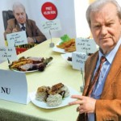

Recensământul preocupărilor părerologilor români aduce rezultate cel puţin amuzante. Forumul 9am se laudă că ar avea peste 180 de mii de membri din care vreo 33 de mii şi-au dat cu părerea cel puţin odată. Deci avem oarece reprezentativitate. Cele mai discutate 11 subiecte pe forumul 9AM de săptămâna asta rezumă temele care nasc polemici [...]

RADET Bucureşti, companie controlată de Primărie, a achiziţionat doar în 2011, prin sistemul de licitaţii publice, lapte praf în valoare de aproape 265 de mii RON fără TVA. Comparativ, în acelaşi an, Spitalul de Copii Grigore Alexandrescu a cheltuit pentru lapte doar 132 de mii de lei noi, adică de două ori mai puţin. Faceţi [...]

Pe care sau care? Grea întrebare. Când îl aud pe nea Vasile din partea dorsală a Moldovei povestind cum a venit el „pe tren” până la capitală, spun că e explicabil şi îmi văd de treabă. În fond, omul a citit probabil doar stenograme în Libertatea. Dar când citesc în ditamai revista cu pretenţii culturale, [...]

- Te mişti odată cu ştirea aia cu moştenirea? – Gata şefu, îi bag o poză cu lumânări şi-i dau drumu’. Să-i fac ş-un cadran negru, ceva? – Lasă-l dracu’ de cadran, că dacă dă Newsinul înaintea noastră suntem mâncaţi. Bagă un măr şi gata. A murit ăla la două şi noi n-avem nimic pe [...]

Libertatea, liderul tabloidelor româneşti conform SATI, publicaţie bântuită de peste 2 milioane de vizitatori unici pe lună, conform aceleiaşi surse, îşi delectează publicul cu transcrierea stenogramelor convorbirii dintre educatoarea hoaţă – Claudia Elena Chirilă – şi mentorul ei. Spre deosebire de competitorii pe piaţa tabloidelor, care au publicat pur şi simplu respectivele texte, Libertatea.ro a [...]
În principiu, doar banii lui Dan Voiculescu. Nu de alta, dar de mâncare și băuturi nu se poate atinge. Și, dacă e să ne luăm după Dr Gheorghe Mencinicopschi, om cu carte, nici noi n-ar trebui s-o facem. Altfel riscăm să ne crească ficatul de la mâncarea de cartofi, să ni se atrofieze pancreasul, să dăm în [...]